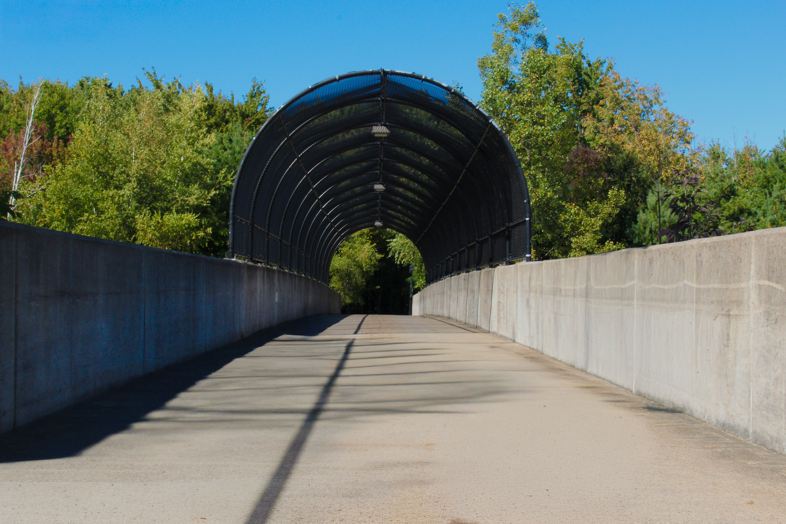
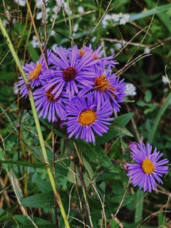
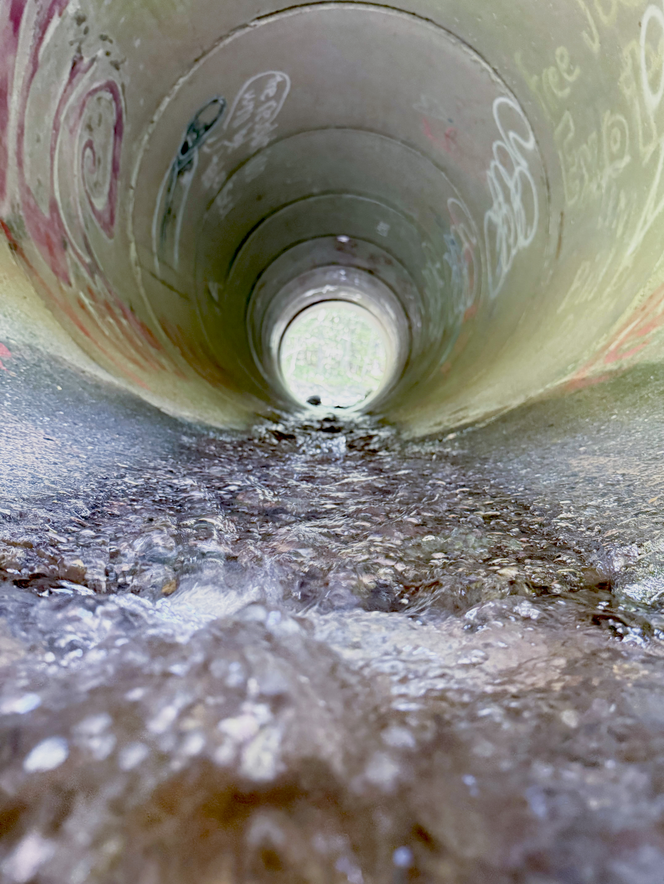
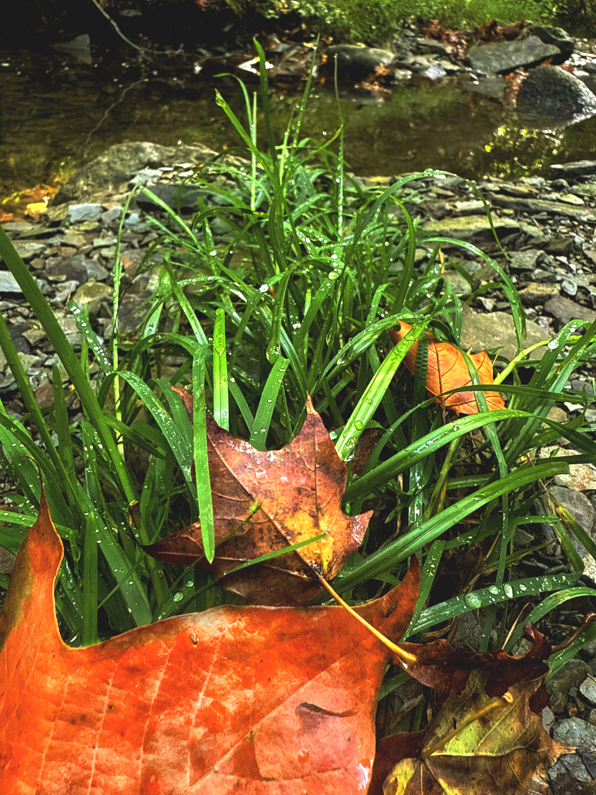

This was not my first time walking this
bridge on this path to the fields, but it
was the beginning of my discovery of
some new trails that eventually led to me
finding a unique portion of Four Mile
Creek that flows beneath the bridge. I
like the symmetrical perspective image
that I captured here with the bridge and
trees that leads to the trail and invites
you to continue walking. It is probably
my favorite photo. You can also see the
changing colors of the leaves from green
to orange both on the trees and the
fallen ones on the bridge.

This is a part of the
bridge that is above
an active roadway, so
the walls are higher
and part of it is
covered. This image
shows the blue sky in
contrast to the trees
and concrete.

These purple flowers caught my eye
down on the dirt trail close to the
river. This was a great opportunity for
a close-up image with vibrant colors.
I was going for a focused shot of the
flowers with a blurred background
behind them.

In this photo, I captured a perspective
shot of the water flowing into the
drainpipe. It was difficult to get the
camera to focus on everything all at
once, but I like how it turned out
focused on the middle of the image. The
movement of the water is what shows
up here, and it looks pretty cool.

This image captures the fall colors well and
contrasts with the green grass and the
smooth water in the background. I edited
the image to emphasize the colors, and I
like how it turned out.